<mat-toolbar fxLayoutAlign="space-between center">
  <div>
    
  </div>
  <div>
    <button mat-icon-button *ngIf="sidenav.mode === 'over'" (click)="sidenav.toggle()">
      <mat-icon *ngIf="!sidenav.opened"> menu </mat-icon>
      <mat-icon *ngIf="sidenav.opened"> close </mat-icon>
    </button>
  </div>
</mat-toolbar>
<mat-sidenav-container>
  <mat-sidenav #sidenav="matSidenav" class="mat-elevation-z8">
    
    <h4 class="name">{{ "project_sidenav.user" | translate }}</h4>
    <p class="designation">{{ "project_sidenav.occupation" | translate }}</p>
    <mat-divider></mat-divider>
    <button mat-button class="menu-button" (click)="openApp()">
      <mat-icon>home</mat-icon>
      <span>Início</span>
    </button>
    <div *ngFor="let menu of menuList">
      <button [ngClass]="{
        active: menu.action.startsWith(this.activeMenu)
      }" mat-button class="menu-button" (click)="navigate(menu.action)">
        <mat-icon>{{ menu.icon }}</mat-icon>
        <span>{{ menu.name | translate }}</span>
      </button>
    </div>
    <button mat-button class="menu-button logout" (click)="logout()">
      <mat-icon>exit_to_app</mat-icon>
      <span>{{ "project_sidenav.logout" | translate }}</span>
    </button>
  </mat-sidenav>
  <mat-sidenav-content>
    <div class="content">
      <router-outlet></router-outlet>
    </div>
  </mat-sidenav-content>
</mat-sidenav-container>